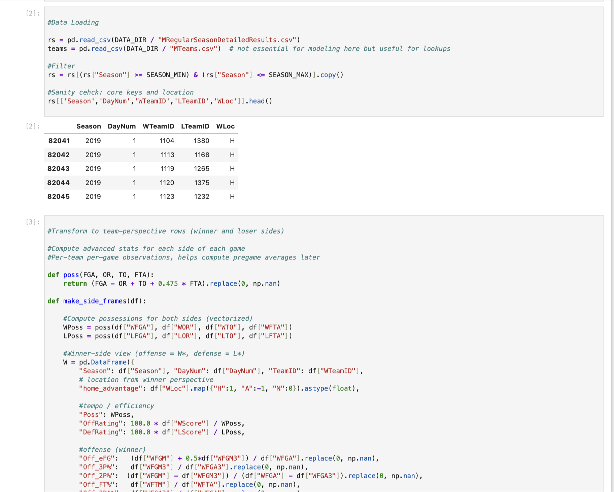
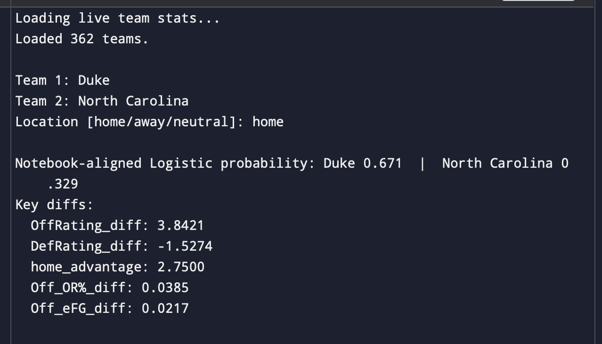
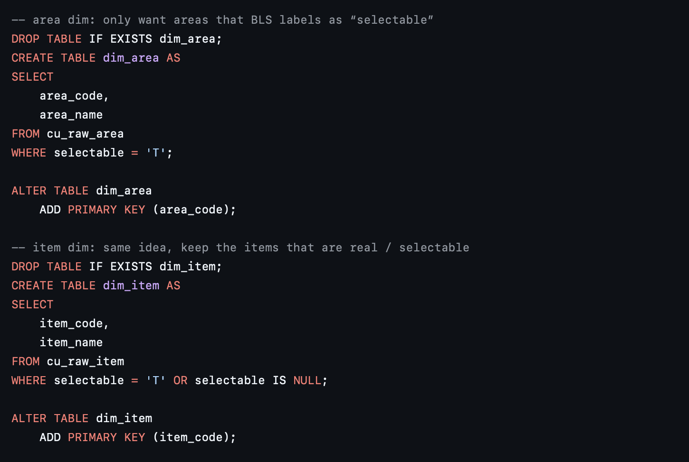

I created this portfolio to showcase my skills & abilities as a data analyst.
In this portfolio, you will find several projects using a variety of software & programming languages
to clean, visualize, & analyze large datasets.
About me:
I graduate in Fall 2026 with a BS in Computer Science at Clemson University.
I love college sports, golf, and being with friends and family. I always enjoy having fun and new experiences!
I am a very driven, hardworking indivdual, and would relish the opportunity to work in the data science and analytics industry!
I hope you enjoy looking through some of my work!

In this project, I built leakage-safe NCAA machine learning models (2019–2024) that learn which team stats matter most. I:
- Engineered pregame features from NCAA regular- seasonbox scores, including four-factor metrics, pace, and home court advantage
- Trained Logistic Regression and XGBoost. Best model achieved AUC ≈ 0.77, Brier ≈ 0.193 on a true 2024 holdout
- Exported normalized “weights” and feature importances as JSON for prediction use later

In this project, I built a live predictor in Python that relies on the data from the NCAA training model so I can use it in real time. This predictor:
- Pulls current NCAA team stats via API
- Maps them into the trained feature space
- Returns win probabilities for any matchup of two teams

In this project I transformed raw Consumer Price Index text files from the U.S. Bureau of Labor Statistics into clean, ready tables in MySQL. I:
- Imported raw Consumer Price Index text files from the U.S. Bureau of Labor Statistics into MySQL
- Cleaned and normalized the data to handle period codes, cast text values, and filter to valid monthly observations
- Built various views and window-function logic to calculate year-over-year inflation and exported cleaned tables as CSV files for analysis and visualization